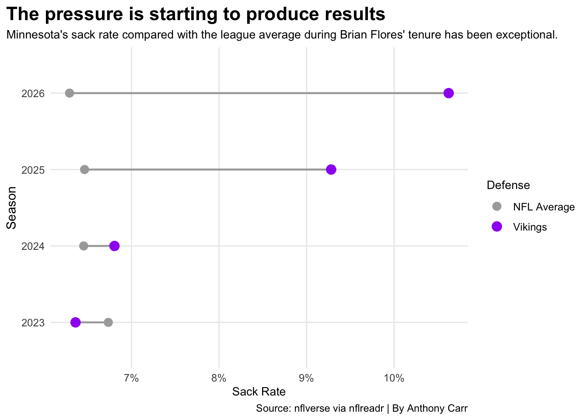

Nobody Brings the Pressure Like Brian Flores and the Minnesota Vikings.
Minnesota Vikings
Brian Flores
Author
Anthony Carr
Published
November 13, 2026
When Brian Flores joined the Minnesota Vikings as defensive coordinator in 2023, he brought a different approach to the defensive side of the football for the organization. Known for his aggressive and unpredictable schemes, Flores creates a gameplan that makes life difficult for opposing quarterbacks by bringing pressure from different areas of the field.
That gritty approach has given Minnesota a defensive identity that stands out across the NFL. The Vikings have consistently blitzed at a much higher rate than the average NFL defense, but being aggressive does not always work in a team’s favor. The bigger question at hand is whether this approach has translated into results.
To get a better idea of what makes this defense different, we can look at Minnesota’s blitz rate, sack rate and points allowed compared to the rest of the NFL from 2023 through week 9 of the 2026 season. These numbers will show just how unique Flores’ approach has been and how it correlates to the gridiron.
The difference is hard to miss. Since Flores’ arrival to the Twin Cities, his defensive group has blitzed on a much higher percentage of eligible passing plays than the rest of the NFL. While the average defense stays around the high-20% to low 30%, the Vikings average has yet to drop below 40% in four years, with the teams lowest percentage coming in 2024 at roughly 44%.
In 2026, the number has climbed even higher. With an abnormal 72.5% blitz rate through week 9 of this season, Brian Flores has made the opposing quarterback’s lives miserable.
But bringing pressure is one thing. What happens when that pressure actually reaches the quarterback?
Code
blitz_sack_data <- eligible_plays |>group_by(season, defteam) |>summarise(eligible_plays =n(),dropbacks =n(),sacks =sum(sack ==1, na.rm =TRUE),sack_rate = sacks / dropbacks )sack_comparison <- blitz_sack_data |>group_by(season) |>summarise(nfl_avg_sack_rate =mean(sack_rate, na.rm =TRUE),vikings_sack_rate = sack_rate[defteam =="MIN"] )ggplot() +geom_segment(data = sack_comparison,aes(x = nfl_avg_sack_rate,xend = vikings_sack_rate,y =factor(season),yend =factor(season) ),color ="darkgrey",linewidth = .8 ) +geom_point(data = sack_comparison,aes(x = nfl_avg_sack_rate,y =factor(season),color ="NFL Average" ),size =3 ) +geom_point(data = sack_comparison,aes(x = vikings_sack_rate,y =factor(season),color ="Vikings" ),size =3.5 ) +scale_color_manual(name ="Defense",values =c("NFL Average"="darkgrey","Vikings"="purple" ) ) +scale_x_continuous(labels = scales::percent ) +labs(x ="Sack Rate",y ="Season",title ="The pressure is starting to produce results",subtitle ="Minnesota's sack rate compared with the league average during Brian Flores' tenure has been exceptional.",caption ="Source: nflverse via nflreadr | By Anthony Carr" ) +theme_minimal() +theme(plot.title =element_text(size =16, face ="bold"),axis.title.x =element_text(size =10),axis.text =element_text(size =9),plot.subtitle =element_text(size =10),legend.title =element_text(size =10),legend.text =element_text(size =9),panel.grid.minor =element_blank(),plot.title.position ="plot" )

For the most part, Minnesota gets home when they send the house. The Vikings finished just below the league average in 2023, but have been above the league average in every year since. The difference became much more noticeable in 2025 and 2026, when Minnesota’s sack rate took off and never looked back at the rest of the NFL.
That is another important piece of Flores’ defensive approach. The Vikings aren’t just sending extra defenders for the fun of it, as now we see in their recent years that the pass rush has been producing results. Of course, not every sack comes directly from a blitz. Strong coverage and individual pass-rushing abilities can play a role, but the comparison gives us another look at how Minnesota’s defense has performed. Although sacks are a critical factor, they aren’t the ultimate goal of a defense. At the end of the day, the scoreboard is where people look. Keeping your opponents to a low score is always the frontrunner for a defense. So how does Minnesota’s aggressive approach compare to the rest of the NFL when it comes to points allowed?
When comparing blitz rate with the average points allowed per game, it becomes clear that blitzing more does not automatically mean fewer points. This scatterplot shows us that teams with lower blitz rates can still have strong defensive results, while some blitz heavy teams allow more points. The relationship is not as simple as it would seem.
Minnesota’s results have also changed across the four seasons as well. The Vikings have consistently been among the league’s more aggressive defenses, but their points allowed have changed from year to year. What stands out is this year, 2026, as this season is their highest blitz rate in the chart combined with their lowest average points allowed. However, those numbers are still season-to-date and should be viewed as a snapshot rather than the final result.
So, has Brian Flores created one of the NFL’s most unique and successful defenses? The numbers make a strong case for its uniqueness. Minnesota’s willingness to blitz has continued to separate them from the typical NFL defense, while its recent sack production shows that the pass rush has been making an impact.
But as for success? Well… that becomes a bit more complicated. Brian Flores’ mindset may just be a very special needle in the haystack. Yes, the defense has been known to cause chaos with promising results, but as we’ve seen, a high blitz rate does not always guarantee fewer points allowed. Minnesota has also had its ups and downs during Flores’ tenure so far.
Still, Flores has given Minnesota a clear defensive identity built around wreaking havoc on the quarterback. That alone makes the Vikings one of the most interesting defensive teams to watch.